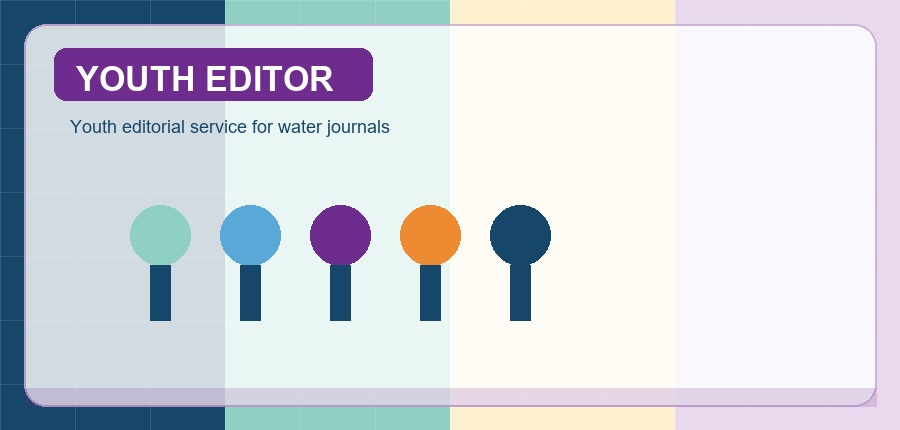
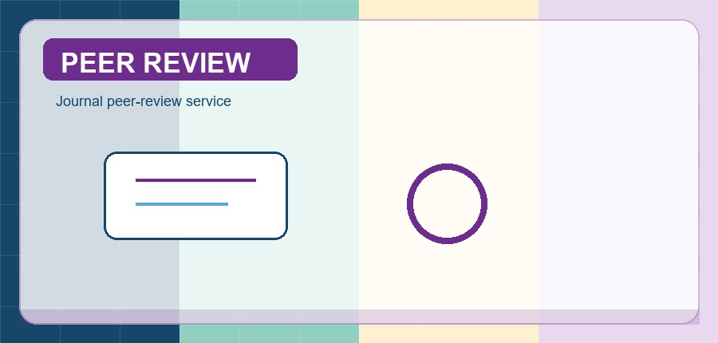
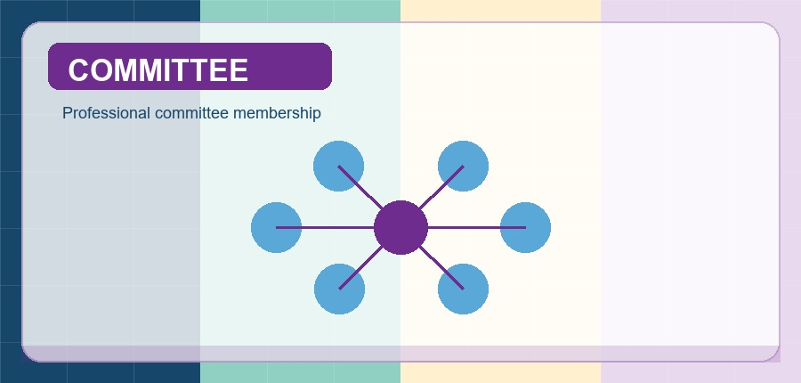
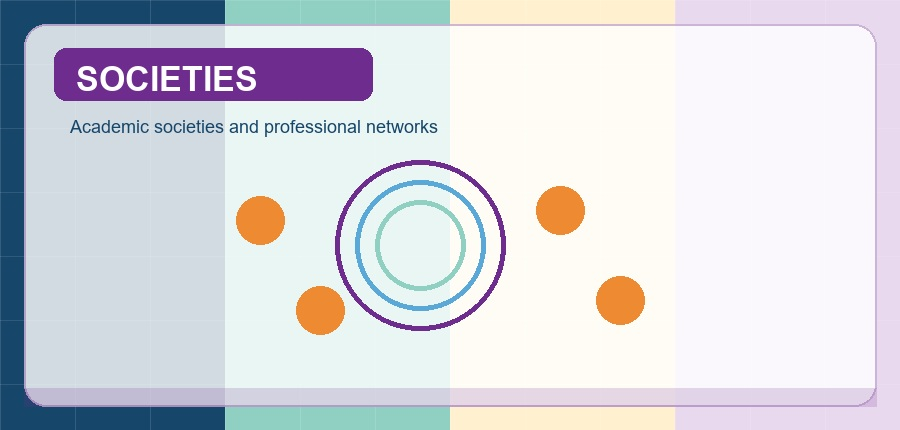

Guest Editor
- Applied Sciences Guest Editor | International journal | 2025-Present.
- Frontiers in Environmental Science Guest Editor | International journal | 2022-Present.
Professional Activities and Service


Reviewer for Coastal Engineering, Atmospheric Research, Ocean Engineering, Physics of Fluids, Powder Technology, Applied Ocean Research, Journal of Coastal Research, Journal of Ocean University of China, and other journals.

